扉页

版权页
京权图字01-2006-3283
Originally published by Oxford University Press, Great Clarendon Street, Oxford. © 2002
This edition is licensed for sale in the People's Republic of China only and not for export therefrom.
'Oxford' is a registered trademark of Oxford University Press.
图书在版编目（CIP）数据
五镇故事：英汉对照／（英）贝内特（Bennett, A.）著；（英）布拉德（Bullard, N.）改写；孟颖译．—北京：外语教学与研究出版社，2006.6（2014.12重印）
（书虫·牛津英汉双语读物）
书名原文：Stories from the Five Towns
ISBN 978-7-5600-5420-9
Ⅰ．五… Ⅱ．①贝…②布…③孟… Ⅲ．①英语—汉语—对照读物②故事—作品集—英国—现代 Ⅳ．H319.4:I
中国版本图书馆CIP数据核字（2006）第019036号
出版人： 蔡剑峰
责任编辑：周 晶
封面设计：孙莉明
出版发行：外语教学与研究出版社
社 址：北京市西三环北路19号（100089）
网 址：http://www.fltrp.com
版 次：2006年6月第1版
书 号：ISBN 978-7-5600-5420-9
* * *
凡侵权、盗版书籍线索，请联系我社法律事务部
举报电话：（010）88817519 电子邮箱：banquan@fltrp.com
法律顾问：立方律师事务所 刘旭东律师
中咨律师事务所 殷 斌律师
内容简介
内容简介
伯斯利、汉桥、克尼普、朗肖、特恩希尔——这就是本书所说的五镇。这些故事发生在20世纪初的英格兰中部地区。如今的五镇已经成为斯托克城，不过这个地方仍然因为陶瓷和阿诺德·贝内特故事中的人物而闻名。
这些人既不是名人，也不是什么大人物。他们在商店和工厂工作；他们恋爱又失恋；他们会拌嘴，会争吵。他们有时头脑聪明而且事业成功，他们有时的所作所为又极其愚蠢。菲利普有个重要消息要告诉母亲，不过他自己也将得到一个大大的惊喜……杰先生讨厌自己的画像，但又能怎么办呢？这可是五镇人送给他的礼物……在克尼普站，托比·霍尔突然决定乘火车去特恩希尔，不过这是为什么呢？最后出场的是约翰和罗伯特。他们是亲兄弟，住在同一屋檐下，在同一张桌子上吃饭——但十年来他们没和对方说过一个字……
STORIES FROM THE FIVE TOWNS
STORIES FROM THE FIVE TOWNS
Bursley, Hanbridge, Knype, Longshaw, Turnhill — these are the Five Towns of Arnold Bennett's stories, set in the English Midlands in the early 1900s. Today the Five Towns are the city of Stoke-on-Trent, but the place is still famous for its pottery... and for the people in Arnold Bennett's stories.
They are not famous or important people. They work in shops and factories; they fall in, and out of, love; they argue and they quarrel. Sometimes they are clever and successful, and sometimes they do very stupid things. Philip has some important news to tell his mother, but he is also going to get a big surprise... Sir Jee hates his portrait, but what can he do about it? It was a present from the people of the Five Towns... At Knype station, Toby Hall suddenly decides to take the train to Turnhill, but why? Then there are John and Robert. They are brothers, they live in the same house, they eat meals together — and neither has said a single word to the other for ten years...
目录
News of the Engagement
News of the Engagement
My mother never came to meet me at Bursley station when I arrived in the Five Towns from London. She always had other things to do; she was getting ready for me. So I always walked alone up Trafalgar Road, between the factories and past the football field. And so tonight, I had time to think. I had some very important news for my mother, and I didn't know how to tell her.
I wrote to my mother every week, to tell her what I was doing. She knew the names of all my friends. I often wrote about Agnes and her family. But it's difficult to write in a letter: 'I think Agnes likes me,' 'I'm in love with her,' 'I'm sure she likes me,' 'I think she loves me,' 'I'm going to ask her to marry me.' You can't do that. Well, I couldn't do it. And on the 20th December I asked Agnes to marry me, and Agnes said yes. But my mother didn't know anything about it. And now, on the 22nd December, I was coming to spend Christmas with my mother.
My mother was a widow. I was her only son — and now I was engaged and she didn't know. I was afraid she was going to be a little unhappy, and I was ready for a difficult evening.
I walked up to the front door, but before I put my hand up to ring, the door opened and there was my mother. She put her arms around me.
'Well, Philip! How are you?'
And I said, 'Oh! I'm all right, mother. How are you?'
She smiled at me. She looked excited and younger than her forty-five years. There was something strange in her smile. I thought: 'She knows I'm going to get married. How does she know?'
But I said nothing. You have to be careful with mothers.
'I'll tell her at supper,' I decided.
I went upstairs to my bedroom. When I came down, my mother was busy in the kitchen. I went into the dining room, and here I had a surprise. There were three chairs around the table, and three plates and three glasses.
So Agnes was coming! I didn't know how my mother knew, but she did know. She and my wonderful Agnes were planning a surprise for me. Agnes was coming to Bursley for Christmas!
There was a ring at the door. 'It's Agnes!' I thought, and running to the door, I opened it.
It was Mr Nixon.
Mr Nixon was an old friend of the family. He was a large, strong man of about forty-nine or fifty. He was very helpful to my mother after my father's death.
'Good evening, young man,' he said. 'It's good to see you back in Bursley.'
'Mr Nixon has come for supper, Philip,' said my mother.
Mr Nixon often came to supper during my visits to Bursley, but never on the first night. I liked him, but I wasn't very happy to see him tonight because I wanted to talk to my mother. I couldn't talk to her about Agnes with Mr Nixon sitting at the table.
We started our supper. We talked about this and that, but nobody ate very much. I was thinking about what to say to my mother when Mr Nixon went home. At the end of the meal I told my mother that I must go to the post office. I had an important letter to post.
'Can't it wait until tomorrow, my pet?' my mother asked.
'It can't,' I said.
My letter, of course, was to Agnes. A letter to Agnes could not wait until tomorrow! I walked over to the dining room door.
'A letter to a lady?' asked Mr Nixon, laughing.
'Yes,' I replied.
I walked to the post office and posted my letter. When I got back home, I was sorry to see that Mr Nixon was still there. He was alone in the sitting-room, smoking.
'Where's mother?' I asked.
'She's just gone out of the room,' he said. 'Come and sit down. Have a cigarette. I'd like to talk to you, Philip.'
I took a cigarette and sat down. I hoped the talk was not going to be a long one.
'Well, my boy,' he said. 'Would you like me as a stepfather?'
For a second I could not move or speak.
'What?' I said. 'You mean... you and my mother...?'
'Yes, my boy, I do. I asked her yesterday, and she said yes. I've wanted to ask her for a long time — I think she knew that. Did she tell you in her letters? No? It's difficult to write in a letter, of course. She couldn't really write, "My dear Philip, an old friend, Mr Nixon, is falling in love with me and I think I'm falling in love with him. I think he'll ask me to marry him soon." I don't think your mother could write that, could she?'
I laughed.
'Shake hands,' I said. 'This is wonderful news.'
After a moment my mother came in, a little red in the face.
'The boy's very happy, Sarah,' said Mr Nixon.
I said nothing about my own plans that evening. It was something new to me that my mother could fall in love, and that a man could fall in love with her. It was something new to me that she was lonely in our old house and that perhaps she wanted a new life. Perhaps, like all sons, I thought only about myself and my life. So I decided to say nothing about my news, and that evening my mother came first for me. I could tell her about Agnes tomorrow. We live and learn.
widow n. a woman who has lost her husband by death and has not married again 寡妇
upstairs adv. to an upper floor 往楼上
pet n. a darling, a favourite 宠儿；宝贝
stepfather n. a male stepparent 继父
shake hands to move someone's hand up and down with your own hand as a greeting or as a sign you have agreed something 握手
fall in love develop a great love 爱上
live and learn to learn by experience ［用以对刚知道的事表示惊异］真是活一天学一天
订婚消息
订婚消息
每次我从伦敦回五镇，母亲都不会来伯斯利车站接我。她总有别的事要做：她是在为我回家做准备。因此我总是沿着特拉法尔加大街，经过工厂和足球场，一个人走回家。所以，今晚我有时间好好想想。我要告诉母亲一条重大消息，却不知该如何开口。
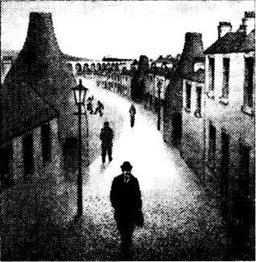
我每周都给母亲写信，告诉她我在忙些什么。她知道我所有朋友的名字。我经常提到阿格尼丝和她的家人。但在信中写不出这样的话：“我觉得阿格尼丝喜欢我”，“我爱上她了”，“我肯定她喜欢我”，“我觉得她爱我”，“我要向她求婚”。你没法这么写。反正，我是写不出来。12月20日我向阿格尼丝求婚，她答应了。但我母亲对此还一无所知。而今天，12月22日，我回来和母亲共度圣诞。
我的母亲是个寡妇。我是她的独子——而现在我已经订婚可她还不知道。我担心她会不大高兴，我准备好要过个难捱的晚上。
我走到家门口，还没按铃，门就开了，母亲站在那儿。她拥抱了我。
“哦，菲利普！你好吗？”
我说：“哦！我很好，母亲。你怎么样？”
她冲我笑了。她有些激动，看起来不像已经45岁的人。她笑得有点儿奇怪。我想：“她知道我要结婚了。她怎么知道的？”
但我什么也没说。和母亲们打交道要小心才是。
“吃晚饭的时候我再告诉她。”我打定主意。
我上楼进了自己的卧室，下来的时候，母亲正在厨房忙碌。我走进餐厅，不由得吃了一惊。桌旁摆了三把椅子，桌上是三副杯盘。
这么说阿格尼丝真的要来！我不知道母亲是如何得知的，但她肯定已经知道了。母亲和我可爱的阿格尼丝想给我惊喜。阿格尼丝要来伯斯利过圣诞！
门铃响了。“是阿格尼丝！”我这样想着，跑到门口打开了门。
来客是尼克松先生。
尼克松先生是我家的老朋友。他魁梧健壮，大概49岁或50岁的样子。父亲死后他对母亲很是照顾。
“晚上好，年轻人，”他说“很高兴看见你回到伯斯利。”
“尼克松先生来吃晚饭，菲利普。”母亲说。
我以前回伯斯利的时候，尼克松先生也经常来吃晚饭，但从没在我回来的第一个晚上来过。我挺喜欢他，但今晚见到他不是很开心，因为我本打算和母亲谈谈，而如果尼克松先生也在的话，我就不能和母亲谈阿格尼丝的事了。
我们开始吃晚饭。我们东聊西扯，但大家都吃得不多。我一直在想尼克松先生回家以后，我该如何对母亲说。吃完饭后，我告诉母亲我必须去趟邮局，我有一封重要的信要寄。
“宝贝儿，不能等明天再寄吗？”母亲问道。
“不行。”我回答。
我的信当然是寄给阿格尼丝的。给阿格尼丝的信可不能等到明天！我向餐厅门口走去。
“给一位小姐的信？”尼克松先生笑着问我。
“是的。”我回答。
我到邮局寄了信。回到家，我不安地发现尼克松先生还没走，他自己待在客厅里抽烟。
“母亲在哪儿？”我问。
“她刚出去。”他说，“过来坐下吧，抽支烟。我想和你谈谈，菲利普。”
我接过烟，坐了下来。我希望不会谈太久。
“哦，孩子，”他说，“你愿意让我做你的继父吗？”
有那么一会儿，我愣住了。
“什么？”我说，“你的意思是……你和我母亲……？”
“是的，孩子，是这个意思。昨天我向她求婚，她答应了。我很早就想向她求婚了——我想她也明白。她在信里跟你提过吗？没有？在信里写这个当然挺难的。她写不出这样的话：'我亲爱的菲利普，一个老朋友，尼克松先生爱上了我，而我也爱上了他。我想他很快会向我求婚。'我觉得你母亲写不出这种话，对吗？”
我笑了。
“握个手吧，”我说，“这是个特大的好消息。”
过了一会儿，母亲进来了，脸颊微微发红。
“孩子很开心，萨拉。”尼克松先生说。
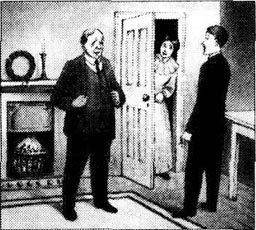
那天晚上我没提自己的事。我以前从未想过母亲也会恋爱，没想过会有一个男人爱上她。她在老屋里很孤独，或许想开始新生活，这也是我没想到过的。大概和所有当儿子的一样，我只想着自己和自己的生活，所以我决定不说自己的事，在那个晚上母亲是最重要的。我可以明天再告诉她阿格尼丝的事。我们活一天就多明白一些事情。
The Burglary
The Burglary
Lady Dain said: 'Jee, if that portrait stays there much longer, I shall go mad. I can't eat any more with it up there!' She looked up at the big portrait on the wall opposite the breakfast table.
Sir Jehoshaphat said nothing.
Lady Dain did not like the portrait. Nobody in the Five Towns liked the portrait. But the portrait was by Cressage, the finest portrait painter in England, and a portrait by Cressage cost a thousand pounds or more.
Sir Jehoshaphat Dain was perhaps the cleverest and most successful businessman in the Five Towns. His business, called Dain Brothers, had one of the biggest pottery factories in England, and their cups and plates went all over the world. Sir Jehoshaphat was rich, because he sold his pottery very cheaply, and paid his workers very little. But Sir Jee liked to be important, so he used some of his money to pay for schools and hospitals for the people of the Five Towns.
The people of the Five Towns often laughed at Sir Jee, but they also wanted to say thank you for the schools and hospitals. They decided to give him a portrait for a present. So Cressage painted the portrait and many people in London thought it was very good. 'A wonderfully clever portrait of a successful businessman from a small town; a little man who has made a lot of money and who thinks he is very important,' said one newspaper.
It was not a kind portrait and many of the people of the Five Towns laughed when they saw it. But Sir Jehoshaphat had to take his present, and to say thank you for it. Now it was on his wall in his home, Sneyd Castle, and after sixteen months Lady Dain was tired of looking at it.
'Don't be stupid, wife,' said Sir Jee. 'I'm not taking that portrait down, or selling it — not even for ten thousand pounds. I want to keep it.'
But that wasn't true. Sir Jee hated the portrait more than his wife did. And he was thinking of a secret plan to get rid of it.
'Are you going into town this morning?' asked his wife.
'Yes,' he answered. 'I'm in court today.'
He was one of the town magistrates. While he travelled into town, he thought about his plan for the portrait. It was a wild and dangerous plan, but he thought it was just possible.
* * *
That morning, the police were very angry with Sir Jee. A man was in court, and the police said he was a burglar. They wanted him to go to prison for five years or more. But Sir Jee did not agree. He said there was no proof that William Smith was a burglar. The other magistrate was very surprised at this and the police were very cross, but William Smith left the court a free man. Before he left, Sir Jee asked to see him in his office.
'Smith,' said Sir Jee, looking at him carefully, 'you were a lucky man this morning, you know.'
Smith was a small, thin man, with untidy hair and dirty clothes.
'Yes, I was lucky,' he answered. 'And what do you want from me?'
'I hope I can help you,' said Sir Jee.
'I don't know if I want help, but I never say no to money.'
'Sit down,' said Sir Jee.
William Smith sat down at Sir Jee's desk. 'Well?' he asked.
'I want you to steal something from my house. But it won't be a crime.'
'What?' Smith was very surprised.
'In my house, Sneyd Castle, there is a portrait of myself. I want someone to steal it.'
'Steal it?'
'Yes.'
'How much will you pay me for doing it?'
'Pay you?' said Sir Jee. 'It's a Cressage! You'll get two thousand pounds for it in America.'
And Sir Jee told Smith the story of the portrait and why he wanted to get rid of it. Smith thought for a minute and then said:
'All right, I'll do it, just to help you.'
'When can you do it? Tonight?'
'No,' said Smith. 'I'm busy tonight.'
'Well, tomorrow night.'
'I'm busy tomorrow, too.'
'You're a busy man,' said Sir Jee.
'Well, business is business, you know,' said Smith. 'I can do it the day after tomorrow.'
'But that's Christmas Eve.'
'Well, it's either that or Christmas Day. I'm busy again after that.'
'Not in the Five Towns, I hope,' said Sir Jee.
'No. There's nothing left in the Five Towns.'
So they agreed on Christmas Eve.
'Now,' said Sir Jee, 'I'll describe the rooms in Sneyd Castle to you. Then you'll know where —'
William Smith looked at him and laughed loudly. 'Describe the rooms to me? Do you think I'm stupid? I'm a businessman — I know Sneyd Castle better than you do.'
* * *
On the afternoon of 24th December, when Sir Jehoshaphat came home to Sneyd Castle, his wife was packing suitcases. The Dains were going to their son's house for Christmas. Their son John had a new wife and a new baby, and he wanted to spend Christmas in his new home with all the family.
Sir Jee said nothing to his wife immediately. He watched her for a while and then later, during tea, he said suddenly: 'I can't come to John's house this afternoon.'
'Oh, Jee!' she cried. 'You are difficult. Why didn't you tell me before?'
He didn't answer the question. 'I'll come over tomorrow morning — perhaps in time for church.'
'There's no food in the house. And the servants are all going away on holiday. There's nobody to cook for you. I'll stay with you if you like.'
'No, I'll be all right.'
Lady Dain went to her son's, leaving some cold food for Sir Jee.
Sir Jee had a cold, silent meal, in front of his portrait. He was alone in the castle and that was a good thing, he decided. There were no servants to wake up and hear William Smith at work. Sir Jee was a little afraid; perhaps it was dangerous to bring a burglar into the house. He looked again at the portrait in its big gold frame. 'Will he take the frame?' he asked himself. 'I hope he doesn't. It's very heavy. I don't think one man could carry that.' But perhaps Smith had someone to help him.
'Goodbye!' he said to his portrait, opened one of the windows for William Smith, and went to bed.
He did not sleep. He listened. At about two o'clock there were a few noises. They stopped, then started again. Smith was at work. Sir Jee got out of bed quietly, went to the window and looked out carefully. Two men were carrying something large and square across the garden. So Smith had a friend, and he was taking the portrait and the frame.
Sir Jee went back to bed. He slept for a few hours and then went downstairs.
The portrait was on the floor with some writing across it in big white letters: 'This is no good to me.' It was the big gold frame that was missing.
And that wasn't all. Plates, knives, forks, spoons, cups — everything made of silver was also missing. There was not a single silver spoon left in the castle.
portrait n. a painting, drawing, or photograph of a person 肖像；人像
stupid adj. unintelligent, slow-witted, foolish 愚蠢的
get rid of be freed or relieved of (something unwanted) 处理掉；丢弃
magistrate n. someone, not usually a lawyer, who works as a judge in a local court of law, dealing with less serious crimes 地方法官
steal v. take (another person's property) illegally 偷盗；窃取
crime n. a serious offence punishable by law 罪行
pack v. fill (a suitcase, bag, etc.) with clothes and other items 把东西装进（箱子、盒子等）
suitcase n．a large case with a handle, used for carry clothes and possessions when you travel 衣箱
frame n. a structure made of wood, metal, etc. that surrounds something such as a picture or window, and holds it in place 画框
no good to no advantage 没用
downstairs adv. down a flight of stairs 往楼下
spoon n. a utensil consisting of an oval or round bowl and a handle for conveying food to the mouth, for stirring, etc. 勺子
夜盗
夜盗
戴恩夫人说：“杰，如果那画像继续挂在那儿，我会发疯的。它在那儿，我就再也吃不下去了。”她抬起头看了一眼餐桌对面墙上的大幅画像。
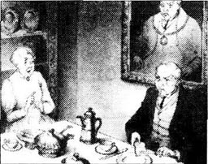
杰霍沙法特先生没说话。
戴恩夫人不喜欢这幅画像。五镇上没人喜欢。但这是克雷塞奇的画，他是英格兰最好的肖像画家。一幅克雷塞奇的肖像画至少值1000英镑。
杰霍沙法特·戴恩先生也许是五镇最精明、最成功的商人了，他的企业——戴恩兄弟公司，拥有英格兰最大的陶瓷工厂之一，生产的杯盘行销世界。杰霍沙法特很富有，因为他的陶瓷价格低廉，而且他付给工人的工资很少。然而杰先生喜欢出风头，于是他拿出一部分钱资助五镇的学校和医院。
五镇人经常嘲笑杰先生，但他们也想为那些学校和医院而感谢他。五镇人决定送给他一幅肖像作礼物，于是克雷塞奇画了这幅肖像。许多伦敦人觉得这幅画很不错。“对来自小镇的成功商人的绝妙刻画；一个自以为是的暴发户。”一家报纸如此评论。
画里的人一副奸诈嘴脸，许多五镇的人看到画的时候都笑了出来。然而杰霍沙法特先生必须接受这个礼物，还不得不表示感谢。现在这幅画挂在他的家——斯尼德城堡的墙上，16个月以后，戴恩夫人实在是看够了这幅画。
“别傻了，夫人，”杰先生说，“我不会把这幅画取下来或者卖掉的——给我一万英镑我也不卖。我想留着它。”
但事实并非如此。杰先生比他的妻子更讨厌这幅画。他在策划一个秘密计划来摆脱它。
“今早你要去镇上吗？”他的妻子问道。
“是的，”他回答，“我今天要上庭。”
他是镇上的地方法官之一。在去镇上的途中，他思索着关于肖像的计划。这个计划疯狂而危险，不过他认为行得通。
* * *
那天早上，警察对杰先生很是恼火。一个男人在接受审判，警察认定他是个夜贼，想把他送进监狱，判五年甚至更多，但杰先生不同意，他说没有证据表明威廉·史密斯是个夜贼。另一位法官很是惊讶，警察也很生气，但是威廉·史密斯被无罪释放了。他离开前，杰先生要他到自己的办公室来。
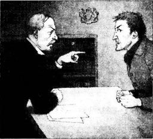
“史密斯，”杰先生边说边认真地打量着他，“今早你很走运，知道吗？”
史密斯又矮又瘦，头发凌乱，衣着邋遢。
“是，我很走运，”他答道，“你想让我做什么？”
“我希望能帮助你。”杰先生说。
“我不知道我是否需要帮助，不过我对钱从不拒绝。”
“坐下吧。”杰先生说。
威廉·史密斯在杰先生的桌子旁坐下来。“什么事？”他问道。
“我想让你从我家偷点儿东西，但这不会成为一项罪行。”
“什么？”史密斯很是惊讶。
“在我的家里，就是斯尼德城堡里，有一幅我的画像。我想让人把它偷走。”
“把它偷走？”
“没错。”
“你打算付我多少钱？”
“付钱？”杰先生说，“那是克雷塞奇的画！在美国能卖2000英镑。”
杰先生告诉史密斯那幅肖像的事以及为什么想摆脱它。史密斯想了想，然后说：
“好吧，我会去，为了帮你。”
“你什么时候动手？今晚？”
“不行，”史密斯说，“我今晚很忙。”
“那就明晚。”
“我明天也忙。”
“你还真是个忙人啊。”杰先生说。
“哦，生意就是生意，你知道。”史密斯说，“我后天来。”
“可那天是圣诞前夜。”
“哦，要么是那天，要么就是圣诞节那天。我之后又要忙了。”
“不是在五镇忙吧，我希望。”杰先生说。
“不是，五镇没剩什么可偷的了。”
于是他们商定在圣诞前夜动手。
“现在，”杰先生说，“我来告诉你斯尼德城堡的房间布局。这样你就知道哪里——”
威廉·史密斯看着他大笑起来。“告诉我房间布局？你觉得我是傻子吗？我是个生意人——我比你更了解斯尼德城堡。”
* * *
12月24日下午，杰霍沙法特先生回到斯尼德城堡的时候，他的妻子正在收拾行李。戴恩夫妇要去他们儿子的家里过圣诞节。他们的儿子约翰刚刚结婚生子，所以想在新家和家人共度圣诞。
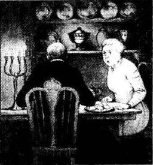
杰先生没有马上对妻子说什么。他看了妻子一会儿，到了喝茶的时候，他突然说：“我下午不能去约翰家了。”
“哦，杰！”她喊道，“你真让人扫兴。为什么不早点儿告诉我？”
他没回答这个问题。“我明天早上过去——或许赶得上去教堂。”
“家里没吃的了，佣人们也都放假了，家里没人给你做饭。如果你愿意，我留下来陪你吧。”
“不必了，我能行。”
戴恩夫人去了儿子家，给杰先生留了些冷的饭菜。
杰先生对着他的肖像吃了一顿寂寞的冷餐。城堡里只有他自己，他觉得这很好。佣人们不会醒来听到威廉·史密斯偷东西的声音。杰先生有点儿害怕：引贼入室也许还是有危险的。他又看了看嵌在巨大金画框里的画像。“他会拿走画框吗？”他问自己，“希望他不会，这很沉。一个人恐怕拿不了。”但也许史密斯有帮手。
“再见！”他对自己的画像说。他为威廉·史密斯打开一扇窗户，然后就去睡了。
他没有睡着，而是一直在听。两点左右有些动静，停了一会儿，又继续响起来。史密斯在干活儿了。杰先生悄悄起床，走到窗前，小心地朝窗外看去。有两个人正搬着件又大又方的东西穿过花园。原来史密斯还带了个同伙，而且他把画和画框一起偷走了。
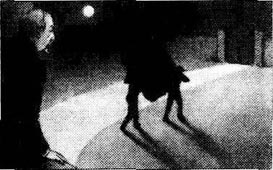
杰先生躺回床上。他又睡了几个小时，然后下了楼。
画像放在地板上，上面写着几个白色大字：“这个对我没用。”而那个大大的金画框不见了。
丢的还不只这个，盘子、刀叉、勺子、杯子——所有的银器都不见了，城堡里连一把银勺子也没剩下。
Beginning the New Year
Beginning the New Year
We are slow, silent people, we of the Five Towns. Perhaps it is because we make pottery, which is slow, silent work. There are many stories about us and how slow and silent we are. These stories often surprise the rest of the world very much, but we just laugh at them. Here is an example.
Toby Hall was born in Turnhill, the smallest of the Five Towns. Last New Year's Eve he was travelling by train from Crewe to Derby, which was now his home town. He got out of the train at Knype, in the centre of the Five Towns, for a quick drink. The station was busy and he had to wait for his drink. When he returned to the train, it was already moving. Toby was not a young man; he couldn't jump on the train, so he missed it.
He went to speak to the man in the station office. 'Young man,' he asked. 'When's the next train to Derby?'
'There isn't one before tomorrow.'
Toby went and had another drink.
'I'll go to Turnhill,' he said to himself slowly, and he paid for his drink.
This was his first visit to the Five Towns for twenty-three years, but Knype station was still the same, and so were the times of the trains to Turnhill. The train was the same, too.
In twenty minutes he was leaving Turnhill station and walking into the town. He walked past a number of fine new buildings. In the town centre almost everything was different.
He walked on, into smaller streets, and at last came to Child Row. The old houses here were the same as always, and he looked at one small house very carefully. The light was on, so there was somebody at home.
He crossed the street to the house. It was a special house for him (Number 11 it was—and is) because twenty-four years ago it was his home.
* * *
Twenty-four years ago, Toby Hall married Miss Priscilla Bratt, a quiet woman of twenty-three. The house belonged to her. The two young people were perhaps not really in love, but they liked one another. Their only problem was the house. Priscilla often said that the house belonged to her. Toby knew that. Everybody in Turnhill knew that. She didn't have to say it so often. Toby asked her not to, but she didn't stop. He was happy to live in his wife's house, but he didn't want to hear about it every day. And after a year it was too much. One day he put some things in a bag, put on his hat, and went to the door.
'Where are you going?' asked Priscilla.
He stopped for a minute, then answered, 'America.'
And he went. It was not difficult for Priscilla. She did not think that Toby was a very good husband. She could live without him; she had her house and some money.
Toby went to the bank and got all his money, and sailed off to New York on the Adriatic. From New York he went to Trenton, New Jersey, which was the Five Towns of America. Toby was a good potter, and he found work easily. After a year, he asked a friend to write to Priscilla, and tell her that he was dead. He wanted to be a free man, and it was only fair for her to be a free woman.
After a few years he returned to England. He changed his name from Hall, and started work as a potter in Derby. He did well — the money was good, and he didn't have much to spend it on. He lived quietly, working all week and going fishing at the weekends.
And now, because of a visit to Crewe, a train, and a drink, he was in Child Row, and crossing the street to Number 11. He knocked on the door.
* * *
Many doors in the Five Towns open slowly and carefully — and so did this one. It opened a few centimetres, and a woman looked out at Toby.
'Is this Mrs Hall's?' he asked.
'No. It's not Mrs Hall's. It's Mrs Tansley's.'
'I thought...'
The door opened a little more.
'Is that you, Toby?'
'It is,' answered Toby, smiling a little.
'Well, well!' said the woman. 'Well, well!' The door opened a little more. 'Are you coming in, Toby?'
'Yes,' said Toby.
And he went in.
'Sit down,' said his wife. 'I thought you were dead. Someone wrote to me.'
'Yes!' said Toby. 'But I'm not dead.'
He sat down in a comfortable chair by the fire. He knew the chair, and he knew the fire. He put his hat on the table. Priscilla locked the door again and sat down herself. Her dress was black and, like Toby, she was getting a little fat.
'Well, well,' she said. 'So you've come back.'
'Yes.'
They were both silent for a minute.
'The weather's cold, isn't it?' he said.
'Yes. It's been a cold winter.'
Another silence. What were they thinking and feeling? Perhaps they weren't thinking anything very much.
'And what's the news?' he asked.
'News? Oh, nothing special.'
There was a picture above the fire. It was a picture of Priscilla when she was young. It surprised Toby.
'I don't remember that picture,' he said.
'What?'
'That!' He looked up at the picture.
'Oh! That! That's my daughter.'
'Oh!' Now Toby was surprised.
'I married Job Tansley,' said Priscilla. 'He died four years ago. She's married,' she said, looking up at her daughter's photograph. 'She married young Gibson last September.'
'Well, well!'
They were silent again.
'That's a good fire,' said Toby, looking at it.
'Yes, it is.'
'Good coal.'
'Seventy pence a tonne.'
Again they were silent.
'Is Ned Walklate still at the pub?' Toby asked.
'I think so,' said Priscilla.
'I think I'll go round and have a drink,' said Toby, standing up.
He was unlocking the door when Priscilla said:
'You've forgotten your hat, Toby.'
'No,' he answered. 'I haven't forgotten it. I'm coming back.'
They looked at one another, speaking without words.
'That'll be all right,' she said. 'Well, well!'
'Yes!'
And he walked round to the pub.
miss v. fail to catch (a bus, train, etc.) 未赶上
sail v. travel on water by the use of sails or engine power （船）航行
fair adj. just, unbiased 公正的；公平的
centimetre n. a metric unit of length, equal to one-hundredth of a metre 厘米
pence n. pl. of penny, a British bronze coin and monetary unit equal to one-hundredth of a pound penny 的复数，便士
tonne n. metric ton 公吨
pub n. a public house 酒馆；酒吧
unlock v. release the lock of (a door, box, etc.) 开（锁）
新年伊始
新年伊始
我们是一群慢吞吞而且不爱说话的人，我是说我们五镇的人。也许这是因为我们制陶的缘故，这是个安静的慢活儿。关于我们以及我们到底有多慢、多不爱说话的故事有很多，这些故事经常会让其他地方的人感到不可思议，而我们只是一笑置之。下面就有这样一个例子。
托比·霍尔出生在特恩希尔，这是五镇中最小的一个镇子。去年的新年前夜，他从克鲁坐火车到德比，那儿是他现在的家乡。他在位于五镇中心的克尼普下了车，想喝上一杯。火车站人很多，他不得不排队买喝的。他回去的时候，火车已经开动了。托比不年轻了，他没法跳上火车，只能错过了。
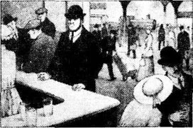
他去问火车站办公室的人。“年轻人，”他问，“下一班去德比的车是几点？”
“明天才有车呢。”
托比又去喝了一杯。
“我要去特恩希尔看看。”他慢慢地自言自语着，付了钱。
这是他23年来第一次回五镇，不过克尼普车站一点儿都没变，开往特恩希尔的列车时刻表也没变，连火车也和原来的一样。
20分钟后，他走出特恩希尔站，来到了镇上。他路过好几座漂亮的新房子。镇中心的一切都变了模样。
他继续往前走，穿过几条窄街，最后拐到儿童路。这里的老房子和从前一样，他细细地打量着一座小房子。灯亮着，一定有人在家。
他过了马路，走到房子跟前。这座房子对他来讲很特别（过去是11号——现在也是），因为24年前这里是他的家。
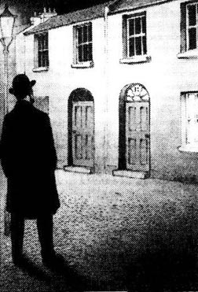
* * *
24年前，托比·霍尔和23岁的普丽西拉·布拉特小姐，一个文静的姑娘结了婚。房子是她的。两个年轻人也许并非倾心相爱，不过他们喜欢着对方。他们之间唯一的问题就是房子。普丽西拉经常唠叨房子是她的，托比明白这一点，特恩希尔的人也都知道，她没必要天天把这事挂在嘴边。托比让她不要再说了，但她不听。他很高兴住在妻子的房子里，但他不想天天听妻子唠叨这事。这样的日子在一年之后变得难以忍受了。一天，他收拾好行囊，戴上帽子，走到门口。
“你去哪儿？”普丽西拉问道。
他顿了一下，然后回答说：“美国。”
他就这样走了。这对普丽西拉来说没什么大不了的，她觉得托比不是个特别好的丈夫，没有托比，她照样能生活：她有自己的房子，还有些钱。
托比到银行取出他所有的钱，搭“亚得里亚蒂克”号船去了纽约。从纽约他又去了新泽西州的塔伦顿，那儿是美国的五镇。托比是个好陶匠，找起工作来很容易。一年之后，他请一个朋友写信告诉普丽西拉他死了。托比想要成为自由人，所以只有让普丽西拉也得到自由才算公平。
几年之后，托比回到了英格兰。他把霍尔这个名字也改了，开始在德比当陶匠。他做得很出色——薪水也不错，而且他没有太多需要花钱的地方。他的生活很安宁，每天工作，周末就去钓鱼。
现在，因为去克鲁，一趟列车，还有喝了一杯的缘故，他来到了儿童路，穿过街道站在11号的门前。他敲了敲门。
* * *
在五镇，许多人家开门时都慢吞吞的，而且很小心——这家也不例外。门打开了一道缝，一个女人从里面瞧着托比。
“是霍尔太太的家吗？”他问道。
“不，这不是霍尔太太的家，是坦斯利太太的家。”
“我以为……”
门又打开了些。
“是你吗，托比？”
“是啊。”托比答道，笑了一下。
“哎呀，哎呀！”妇人叹道，“哎呀，哎呀！”门又打开些，“进来坐坐吗，托比？”
“好啊。”托比回答。
于是他进了屋。
“坐吧，”他的妻子说道，“我以为你已经死了，因为有人写信这么告诉我。”
“没错！”托比说，“不过我还活着。”
托比在壁炉旁一把舒服的椅子上坐了下来。他熟悉这把椅子，也熟悉这壁炉。他把帽子放在桌上。普丽西拉锁好门，也坐了下来。她穿着黑衣服，而且和托比一样，有点儿发胖了。
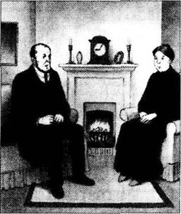
“哎呀，哎呀，”她说道，“这么说你已经回来了。”
“是的。”
他们沉默了一阵。
“天气真冷啊，是吧？”他说。
“是啊，今年冬天真冷。”
又是一阵沉默。他们在想着什么，又是怎样的感觉呢？也许他们什么也没有多想。
“有什么新闻吗？”他问。
“新闻？哦，没什么特别的。”
壁炉上方挂着一张照片，是年轻时的普丽西拉。这让托比很惊讶。
“我不记得那张照片。”他说。
“什么？”
“那个！”他抬起头看着那幅照片。
“哦！那个！那是我的女儿。”
“哦！”托比吃了一惊。
“我嫁给了乔布·坦斯利，”普丽西拉说，“他四年前过世了。我女儿已经结婚了，”她边说边抬头看着女儿的照片，“她去年9月嫁给了小吉布森。”
“哎呀，哎呀！”
他们又陷入沉默。
“这火烧得真旺。”托比望着炉火说道。
“是啊。”
“好煤。”
“70便士一吨。”
他们又沉默下来。
“内德·沃克拉特还在酒馆吗？”托比问。
“我想是的。”普丽西拉说。
“我想出去走走，去喝一杯。”托比说着站起身来。
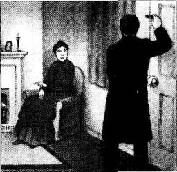
托比开门的时候，普丽西拉说道：
“你忘记拿帽子了，托比。”
“不，”他回答，“我没忘。我还要回来。”
他们看着对方，无声地交流着。
“好吧，”她回答，“哎呀，哎呀！”
“好的！”
于是托比向酒馆走去。
The Silent Brothers
The Silent Brothers
John and Robert Hessian, brothers and bachelors, sat together after supper in their house in Oldcastle Street, Bursley. Both brothers were wearing black, because of the death of their older sister three months ago.
Maggie, the servant, came in to take the supper things off the table.
'Leave the coffee, Maggie,' said John, the elder brother, 'Mr Liversage is coming to visit.'
'Yes, Mr John,' said Maggie.
'Slate, Maggie,' said Robert.
'Yes, Mr Robert,' said Maggie.
The slate was on a table near the fire. Maggie gave it, and its pencil, to Robert.
Robert wrote: Why is Liversage coming?
And he pushed the slate across the table to John.
John wrote on the slate: I don't know. He telephoned. He said he wanted to see us tonight.
And he pushed the slate back to Robert.
John was forty-two years old, and Robert thirty-nine. They were tall, dark men, and both were well and strong. And there was nothing wrong with their hearing.
Ten years before, the brothers had a quarrel. The quarrel was a stupid one, like many quarrels. The morning after, Robert did not answer when John said something to him. 'Well,' said John to himself. 'If he doesn't speak, I won't speak.' And then Robert thought the same thing.
Maggie was the first to see that the brothers were not speaking. Then it was their best friend, Mr Liversage, the solicitor, and some of their other friends. But nobody said anything to them. The people of Bursley thought it was funny, and wanted to know which brother would win the quarrel. So Bursley watched the two men carefully, waiting for one of them to speak. But for ten years the brothers went on living together in the same house, and neither man spoke a single word to the other.
Life without words was very difficult for the brothers, but it was also difficult for their servant. Maggie gave them the slate, because it was easier for her when the brothers wrote things down. It was difficult for their friends too. They began to be a little bored when, at parties, each Hessian talked to everybody in the room — but not to his brother.
There was just one thing wrong with this beautiful quarrel. The brothers worked together in the same pottery factory, and sometimes they needed to speak on business. But they spoke very coldly, and only inside the factory walls. And every evening Bursley watched the two brothers while they walked home, one man five metres behind the other. How stupid it was! But Bursley said nothing.
The conversation by slate that evening was just finishing, when there was a knock at the door, and Mr Powell Liversage came in. He was an old friend of the two from their schooldays. He was also a bachelor, so his evenings were free. He came to see the Hessians every Saturday night, and usually John or Robert went to see him on Wednesdays. But today was Thursday.
'How are you?' asked John, lighting a cigarette.
'Well,' replied Liversage.
'How are you, Powell?' asked Robert.
'Not too bad. And you?'
He sat down and Robert gave him a cup of coffee.
'Well,' said Liversage, after a minute. He sounded a little uncomfortable. 'We've found your sister's will at last.'
'You haven't! When?' asked John.
'This afternoon. It was with some old papers in the bank. Did you know that she had more than twelve thousand pounds?'
'No!' said Robert.
The brothers knew that their sister, Mrs Mary Bott, was rich. They knew that she had no children, and they knew, of course, that they were her only brothers. When she died three months ago, nobody could find her will. And now here it was! Twelve thousand pounds between two people was a lot of money for each of them. But what did the will say?
The two men wanted to know very much, but did they ask the question? Oh no! Neither man wanted to be the first to speak. And so they sat in silence.
'Do you want me to read the will to you?' asked Liversage at last.
'Yes,' they both answered.
Liversage took the will out of his pocket. 'Now, I didn't make this will,' he said, 'so please don't get angry with me.' This is what he read.
You are both very stupid, John and Robert, and I've often said so. Nobody understands why you quarrelled like that about Annie Emery. Your life is difficult, but you've also been very unkind to Annie. She's waited ten years already. So, John, if you marry Annie Emery, I shall give all my money to you. And Robert, if you marry her, I shall give it all to you. And you must be married in twelve months' time. And if neither of you marry her, then I give all my money to Miss Annie Emery, businesswoman, of Duck Bank, Bursley.
Mary Ann Bott, widow
'There. That's all,' Liversage finished.
'Let me see,' said John. Liversage gave him the will and he looked at it carefully.
Robert walked around the table and looked at the paper in his brother's hand.
All three men were silent for a few minutes. Each was afraid to speak, and even afraid to look at the others.
'Well, I must go,' said Liversage, standing up.
'I say,' said Robert. 'You won't say anything about this to Annie, will you?'
'I will say nothing,' agreed Liversage. (But it was wrong of him to say this, because Annie already knew.)
The two brothers sat and thought for a long time. Ten years before, when Annie was a woman of twenty-three, without family, she started a business for herself, which was a bookshop. John was in love with her, but so was Robert. And the two men quarrelled. They said very unkind, very unbrotherly things, and they were both very angry. Because of this (and because they were stupid), they each decided not to marry Annie. Each man wanted to show the other that he was the better, kinder, nicer brother. And so they did not speak for ten years. And poor Annie Emery, who wanted to marry one of the two (but could not decide which), did not marry anyone.
At two o'clock in the morning, John took a penny out of his pocket.
'Who shall go first?' he asked.
Robert felt very strange. His elder brother was speaking to him for the first time for ten years. For a minute he couldn't speak. John tossed the penny and put his hand over it.
'Heads or tails?' he asked.
'Tails,' said Robert.
But it was heads.
On Friday evening John knocked on the side door of Annie Emery's shop. While he stood there, he began to feel afraid. He still wanted to marry Annie, that was true. But how could he explain the last ten years? He began to hope that Annie was not there.
But the door opened, and there she was.
'Mr Hessian!' she cried, with a bright smile.
'I was just walking down Duck Bank,' he said. 'And I thought...'
And in fifteen seconds he was inside the house, sitting down.
'But you're in the middle of eating your supper,' he said. He could see the food ready on the table.
'I haven't started,' she replied. 'Have you had your supper?'
'No,' he said.
'It will be nice of you to help me eat my supper, then,' said she.
'Oh! No...'
But she got plates and glasses out of the cupboard — and there he was, sitting at her table! He could not say no. It was wonderful.
'I'm doing well,' he thought. 'Poor Robert!'
He watched her while she moved about the room. He still did not know how to explain the ten silent years, but perhaps he didn't have to say anything. She was friendly, smiling, and pleased to see him, wasn't she? And she was still a beautiful woman — and also a good businesswoman.
He stayed, and they talked. He decided to ask her to marry him in a few days. Fifteen minutes later he thought about asking her the next day. And in another five minutes he was asking her to marry him, then and there.
She moved away from him quickly.
'It's very sudden. I must think about it,' she answered.
How happy he was! Her answer would soon be yes, he was sure.
'Will you be at church on Sunday?' she asked.
'Yes.'
'If my answer is yes, I shall wear white flowers in my hat. I prefer to give you my answer like that, without words. And if I am not at church next week, I will be the week after.'
'I understand,' he said. 'And if I do see those flowers, perhaps I can come to tea?'
'Yes. But you mustn't speak to me when I come out of church.'
He walked home down Oldcastle Street. He was a happy man — and he felt much younger than his forty-two years.
* * *
She was not at church on Sunday. Robert was away on business most of the week, and John was alone in the house. For many hours he sat at home, thinking about the next Sunday. Robert returned home on Friday.
On Sunday morning, John was up early. He put on his new shirt, which came from the best shop in Hanbridge. Robert was also out of bed early, and he was wearing a new shirt and a new suit. They had a silent breakfast.
'I'm going to church this morning, Maggie,' said Robert, finishing his breakfast. 'Where are my new shoes?'
This was a surprise. Robert did not usually go to church.
They walked to church, with John fifty metres in front of his brother. When he came into the church, Miss Emery was not there. The service was beginning when she walked in. She was wearing white flowers on her hat! There were about a hundred and fifty-five white flowers—her hat was like a garden.
How excited John was! He had Annie, and he had his sister's money. He felt very happy, and he decided to give five thousand pounds to Robert. Perhaps even a little more.
After the service John did not speak to Annie, but hurried home. Robert also went home, and then the two had their lunch. They didn't speak, of course; they read their newspapers.
After lunch they went out for a walk; not together, of course. John walked because he had to do something until his tea with Annie at half past four. And at half past four he turned the corner into Duck Bank — and saw Robert, who was coming round the corner at the other end of Duck Bank. They met outside Annie's door.
'What are you doing here?' asked Robert angrily.
'I'm coming to see Annie,' replied John, also very angry.
'So am I!'
'Well, you're too late,' said John. 'I've asked her to marry me. And she has said yes.'
'Don't be stupid,' replied Robert. 'She's marrying me!'
'When did you ask her?' asked John.
'On Friday.'
'And did she say yes?'
'Not on Friday. But her answer was to wear white flowers at church this morning.'
'That was for me!' said John.
The quarrel went on for some time.
'Come on,' said John. 'Let's go home. We can't talk in the street. Annie will see us from her window.'
They walked home quickly. And the quarrel went on at home all afternoon. It got noisier and angrier, and at six o'clock Maggie came into the room. She told the brothers that they must stop fighting at once. She then told them that she was leaving their house for ever.
* * *
'Why did you do it, my pet?' asked Powell Liversage.
He and Annie Emery were sitting in the garden of his house in Trafalgar Road.
'Why did I do it?' asked Annie. 'Oh, they were so stupid, Powell. I know they're your friends, but really! For ten years they said nothing to me, and then, because of their sister's money, they come to see me. And Powell, they were so stupid. They really thought that I liked them. I wanted them to meet at my house because I wanted to tell them what I thought of them. But I was watching from my bedroom window when they met in the street. They started to quarrel again, and then they went away.'
'They'll be angry with me, I'm afraid,' said Powell. 'When they find out that we're going to get married. They'll say I want to marry you for the...'
'I don't want the money, dear,' said Annie. 'They can keep their twelve thousand pounds.'
Powell was a little sorry to hear this, but he said, 'Yes, of course, dearest,' and took Annie's hand.
Just then Powell's mother, who lived with him, came down the garden.
'Powell,' she said. 'John Hessian's here. He wants to see you.'
'I must go,' said Annie. 'I'll go across the fields. Good night, Mrs Liversage. Good night, Powell.'
Liversage went into the house and found John.
'Powell,' he said. 'I've quarrelled with Robert. I can't stay at home. Can I sleep in your spare room?'
'Of course, John, of course.'
'I think I'll go to bed now, if that's all right.'
An hour later there was another knock at the door, and Liversage opened the door to Robert Hessian.
'Hallo, Powell,' said Robert. 'Can I sleep here tonight? I've had a terrible quarrel with John, and Maggie's gone, and I can't stay in the same house as John.'
'But what —'
'Look, I can't talk. I'll go up to your spare room.'
'All right,' said Liversage.
He took Robert up the stairs, opened the door to the spare room, pushed him in, and closed the door.
What a night!
bachelor n. an unmarried man 单身汉
slate n. a small blackboard or a flat piece of slate in a wooden frame used for writing on （书写用的）石板
hearing n. the faculty of perceiving sounds 听力；听觉
quarrel n. a violent contention or altercation between individuals or with others 争吵
solicitor n. a member of the legal profession qualified to deal with conveyancing, draw up wills, etc. advise clients and instruct barristers, and represent clients in the lower courts 初级律师；诉状律师
light v. set burning, ignite 点燃
there int. expressing confirmation, triumph, dismay, etc. 好啦！
I say an exclamation expressing surprise, drawing attention, etc. 我说；听着
unbrotherly adj. not brotherly, not friendly 不友爱的
heads n. the side of a coin bearing the image of a head （铸有头像的）硬币正面
tails n. the reverse of a coin as a choice when tossing 硬币反面
side door a door in or at the side of a building 侧门
then and there immediately and on the spot 在当时当地；立即
suit n. a set of outer clothes of matching material for men （一套）衣服
service n. a ceremony of worship according to prescribed forms 宗教仪式；礼拜式
spare adj. reserved for emergency or occasional use 备用的
互不说话的兄弟
互不说话的兄弟
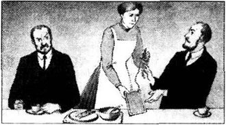
约翰·赫斯和罗伯特·赫斯两兄弟都是单身汉。他们晚餐后一起坐在伯斯利古堡大街的房子里。兄弟俩都穿着黑衣，因为他们的姐姐三个月前刚刚去世。
女佣玛吉进来收拾餐桌。
“把咖啡留下，玛吉，”哥哥约翰说道，“利弗西奇先生要来。”
“是，约翰先生。”玛吉说道。
“把写字板拿过来，玛吉。”罗伯特说。
“是，罗伯特先生。”玛吉说道。
写字板放在壁炉旁的一张桌子上。玛吉把写字板和附带的铅笔递给罗伯特。
罗伯特写道：利弗西奇为什么要来？
他把写字板推到约翰面前。
约翰在上面写：我不知道。他打电话说今晚想见我们。
他把写字板又推回到罗伯特面前。
约翰42岁，罗伯特39岁。他们身材高大，有着深色的皮肤，身强体壮，听力也没有问题。
十年前，两兄弟有过一场争吵。这场争吵像许多争吵一样愚蠢可笑。第二天早上，当约翰对罗伯特说话的时候，罗伯特没有回答。“好吧，”约翰自言自语说，“如果他不跟我说话，我也不理他。”后来罗伯特也这样想了。
玛吉是第一个发现兄弟俩不说话的人。接着是他们最好的朋友，律师利弗西奇先生，还有其他一些朋友。但是没人劝过他们。伯斯利镇的人觉得这很好笑，想知道兄弟俩谁能赢得这场争吵，所以镇上的人静观其变，等着他们中的一个先开口。但是十年来虽然兄弟俩仍然住在同一屋檐下，但谁都没和对方说过一个字。
这样的生活对兄弟俩来讲可不好过，对他们的佣人来讲也是如此。玛吉给了他们一个写字板，因为如果兄弟俩把事情写下来，她做起事来就容易些。对朋友们来讲，这种生活也挺麻烦的。在聚会上，赫斯兄弟和房间里的每个人都说话——唯独不理会自己的兄弟，这个时候朋友们开始有点儿厌烦了。
这场完美的争吵只有一个缺憾。兄弟俩在同一家陶瓷厂上班，有时他们需要谈公事。不过他们交谈时非常冷漠，而且仅仅是在工厂里。每天晚上，伯斯利镇的人都目送兄弟俩回家，一个在前，一个在后，相距有5米远。这多蠢啊！但是伯斯利镇的人什么也没说。
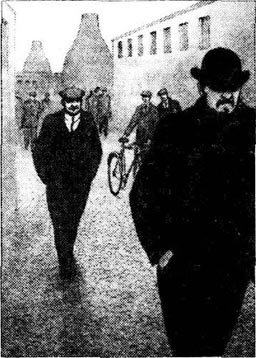
写字板上的对话刚刚结束就传来了敲门声，鲍威尔·利弗西奇先生走了进来。他和兄弟俩是从学生时代就认识的老朋友了。他也是个单身汉，因此晚上有空闲时间。利弗西奇每星期六晚上来赫斯兄弟家串门，而罗伯特或约翰通常在星期三去看他。可今天是星期四啊。
“你好吗？”约翰点了一根香烟问道。
“不错。”利弗西奇回答道。
“你好吗，鲍威尔？”罗伯特问道。
“还可以，你呢？”
利弗西奇坐了下来，罗伯特递给他一杯咖啡。
“唔，”过了一会儿，利弗西奇说道，他听起来有点儿不自在，“我们终于找到了你们姐姐的遗嘱。”
“真的！什么时候？”约翰问。
“今天下午。遗嘱和其他一些旧文件存在银行里。你们知道她的财产超过12,000英镑吗？”
“不知道！”罗伯特回答。
兄弟俩知道他们的姐姐，玛丽·博特太太十分富有；他们知道她没有子女；他们当然也知道自己是她唯一的亲人。她三个月前去世的时候，谁也找不到她的遗嘱。现在找到了！两个人分12,000英镑，这对他们俩来说都是一大笔钱。但遗嘱究竟写了些什么？
两人都非常想知道，但是他们问了吗？哦，没有！他们都不愿意第一个说。于是他们沉默地坐在那里。
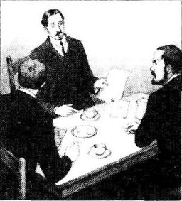
“想让我读遗嘱给你们听吗？”利弗西奇最后问道。
“是的。”他俩一同答道。
利弗西奇从口袋里拿出了遗嘱。“现在我想说，我并不是写遗嘱的人，”他说，“所以请别生我的气。”下面是他宣读的内容。
约翰和罗伯特，你们两个都很愚蠢，我从前也经常这么说。真不明白你们为什么要为安妮·埃默里吵成现在这个样子。不单你们的生活不好过，你们也深深地伤害了安妮。她已经等了十年。所以，约翰，如果你和安妮·埃默里结婚，我会把财产全部给你；罗伯特，如果你和她结婚，我就把财产都给你。你们必须在一年之内结婚。如果你们两个都没和她结婚，那么我将把财产留给伯斯利鸭子岸的商人安妮·埃默里小姐。
寡妇玛丽·安·博特
“好了，就是这些。”利弗西奇念完了遗嘱。
“让我看看。”约翰说。利弗西奇把遗嘱递给了他，约翰仔细地看着。
罗伯特绕过桌子，也去看约翰手中的遗嘱。
三个人沉默了几分钟。谁都不愿说话，甚至不愿看别人一眼。
“好了，我必须走了。”利弗西奇说着站了起来。
“我说，”罗伯特说，“你不会对安妮说这件事，对吧？”
“我不会。”利弗西奇说。（但他根本不该这么回答，因为安妮已经知道了。）
兄弟俩坐在那里考虑了很久。十年之前，安妮还是个23岁的姑娘，没有成家。她自己开了一家书店。约翰爱上了她，罗伯特也爱上了她，所以这两个人吵了起来。他们都说了一些非常恶毒的、有悖兄弟之情的话，两人都很生气。因为这个（还因为他们都很愚蠢），他们都决定不和安妮结婚。两人都想让对方觉得自己是兄弟俩中更好、更善良、更和气的一个。于是他们十年没有说话。可怜的安妮·埃默里本来打算嫁给两兄弟中的一个（但是无法决定是哪个），却谁也没有嫁。
深夜两点钟的时候，约翰从口袋里掏出了一枚一便士的硬币。
“谁先去？”他问。
罗伯特感觉怪怪的。哥哥十年来第一次和他说话。他一时不知如何回答。约翰抛出硬币，然后用手盖住了它。
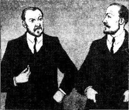
“正面还是背面？”他问。
“背面。”罗伯特回答。
但结果是正面。
星期五晚上，约翰敲响了安妮·埃默里书店的侧门。他站在那里的时候，开始觉得有些胆怯。他仍然想娶安妮，这一点毫无疑问，但是他如何解释过去十年的事呢？他开始希望安妮不在书店了。
然而门开了，安妮就站在他眼前。
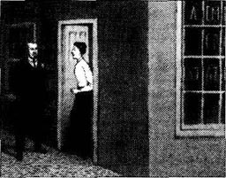
“赫斯先生！”她大声说道，露出了灿烂的笑容。
“我正好经过鸭子岸，”他说，“我想……”
15秒钟后，他已经在屋子里面坐了下来。
“可你正在吃晚餐呢。”约翰说，他看到食物已经摆上了餐桌。
“我还没开始吃呢，”她回答，“你吃晚饭了吗？”
“没有。”他说。
“那么如果你能帮我吃掉这顿晚餐就太好了。”她说。
“哦！不……”
但她已经从橱柜里拿出了盘子和杯子——而他就坐在这里，坐在她的餐桌旁！他无法拒绝，这感觉棒极了。
“进展顺利，”他暗自想，“可怜的罗伯特！”
他看着她在屋子里走动。他仍然不知道该如何解释过去那沉默的十年，也许他什么也不必解释。安妮很友好，笑盈盈的，而且很高兴见到他，不是吗？她仍然是个漂亮女人——还是个出色的女商人。
他留下来和安妮一起吃了晚餐，他们攀谈起来。他决定几天之后向安妮求婚。15分钟后，他想明天就向她求婚。而又过了5分钟，他已经向她求婚了。
她很快从他面前退开。
“这太突然了。我必须考虑一下。”她答道。
约翰是多么开心啊！安妮很快就会答应他，这一点他确信无疑。
“星期天你会去教堂吗？”安妮问道。
“会的。”
“如果我答应你的话，就会在帽子上戴白色的花。与其用言语，我更愿意这样回答你。如果我下星期没去教堂，那我下下星期会去的。”
“我明白，”他说，“那么如果看到了那些花，我是不是可以来喝茶？”
“可以。不过我从教堂出来的时候，你不要和我说话。”
他顺着古堡大街走回家。他很高兴——他感觉自己年轻了不少，不像42岁。
* * *
她星期日没有来教堂。罗伯特这周的大部分时间都在外出差，只有约翰自己在家。他一连几个小时地坐在家里，想着下个星期天的事情。星期五罗伯特回来了。
星期日一大早，约翰就起床了。他穿上了新衬衫，这是从汉桥最好的店买来的。罗伯特起得也很早，也穿上了新的衬衫和西装。两人在早餐时没有说话。
“我今天早上要去教堂，玛吉，”罗伯特吃完了早餐，说道，“我的新鞋子在哪儿？”
这可异乎寻常，罗伯特不常去教堂。
他们向教堂走去，约翰走在前面，离弟弟有50米远。他到教堂的时候，埃默里小姐还没来。她来时，礼拜已经开始了。她的帽子上戴着白色的花！大约有155朵白花——她的帽子就像个花园。

约翰是多么激动啊！他得到了安妮，也得到了姐姐的遗产。他非常开心，决定分给罗伯特5000英镑，也许还会更多。
礼拜过后，约翰没和安妮说话，而是匆忙回家了。罗伯特也回了家，两人一起吃了午餐。当然，他们并没有说话，他们在各自看报纸。
午餐过后，他们出去散步，当然不是一起。约翰散步是因为在4点半和安妮喝茶之前他必须做点儿什么。4点半的时候，他转过街角来到了鸭子岸——看到罗伯特从鸭子岸的另一头转过来。他们在安妮家的门口碰面了。
“你来这里做什么？”罗伯特生气地问。
“我来看安妮。”约翰也气哼哼地答道。
“我也是！”
“哦，你来晚了，”约翰说，“我已经向她求婚了，而且她答应了我。”
“别傻了，”罗伯特说，“她要嫁的人是我！”
“你什么时候向她求婚的？”约翰问道。
“星期五。”
“她答应了？”
“周五没有答应。不过今早她在教堂戴着白色的花，那就是答应我了。”
“那是为我戴的！”约翰说。
争吵持续了一段时间。
“好了，”约翰说，“我们回家吧。我们不能在街上说。安妮会从窗户里看到我们的。”
他们很快走回了家，又在家吵了整整一个下午。争吵声越来越大，越来越激烈。6点钟的时候，玛吉走进了房间。她告诉兄弟俩他们必须马上停止争吵，然后说她要永远地离开这里。
* * *
“你为什么这么做，我的宝贝？”鲍威尔·利弗西奇问道。
他和安妮·埃默里坐在特拉法尔加路自家的花园里。
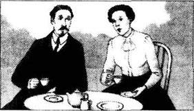
“我为什么这么做？”安妮反问，“哦，他们都是傻瓜，鲍威尔。我知道他们是你的朋友，但事实如此！十年来，他们对我不闻不问，而现在为了他们姐姐的遗产，他们都来找我了。鲍威尔，他们真傻。他们真的以为我喜欢他们。我让他们在我家碰面，是想告诉他们我对他们的看法。但是我从卧室的窗子里看见他们在街上碰到，而且又吵了起来，然后就走了。”
“恐怕他们要生我的气了，”鲍威尔说，“他们如果知道我们要结婚，会说我娶你是为了……”
“我不想要那笔钱，亲爱的，”安妮说，“他们可以留着那12,000英镑。”
鲍威尔听了这话有些许遗憾，不过他还是说：“好吧，当然，最亲爱的。”然后拉起了安妮的手。
这时鲍威尔的母亲来到了花园，她和鲍威尔住在一起。
“鲍威尔，”她说，“约翰·赫斯来了，他要见你。”
“我得走了，”安妮说，“我从田野穿过去。晚安，利弗西奇夫人。晚安，鲍威尔。”
利弗西奇进屋见到了约翰。
“鲍威尔，”他说，“我和罗伯特吵架了，我不能待在家里了。我能在这儿的客房里睡一晚吗？”
“当然，约翰，当然。”
“我想我现在要睡了，如果可以的话。”
一个小时以后，又有人敲门，利弗西奇打开门发现是罗伯特·赫斯。
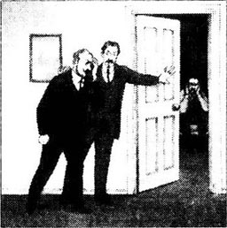
“你好，鲍威尔，”罗伯特说，“今晚能在你这儿睡吗？我和约翰大吵了一架，玛吉也走了。我不能和约翰待在一个房子里了。”
“但什么——”
“看，我不能多说了。我上楼去你的客房。”
“好吧。”利弗西奇说。
他把罗伯特带上楼，打开客房的门，把他推了进去，然后关上门。
这是个怎样的夜晚啊！
ACTIVITIES：Before Reading
ACTIVITIES
Before Reading
1．Read the introduction of the book. What can you guess about the stories? Tick one box for each sentence.
1) The Five Towns are in England.
YES □／NO □
2) The stories happen in the early 1900s.
YES □／NO □
3) The people in the stories are all happy.
YES □／NO □
4) The people in the stories are all poor.
YES □／NO □
5) The Five Towns are very dangerous.
YES □／NO □
2．Read the introduction of the book. How much do you know now about the stories? Match the people with information.
Sir Jee/Philip/Toby Hall/John and Robert Hessian
1) ... are brothers.
2) ... has a picture of himself.
3) ... makes a journey by train.
4) ... is rich.
5) ... is going to tell his mother something important.
6) ... don't talk to each other.
7) ... is going to visit a house in Child Row.
8) ... have a problem about money.
ACTIVITIES：While Reading
ACTIVITIES
While Reading
1．Read News of the Engagement. Here are some untrue sentences about the story. Change them into true sentences.
1) Philip asked Agnes to marry him and she said no.
2) In his letters, Philip told his mother he was going to marry Agnes.
3) When Philip opened the door, Agnes was there.
4) Philip didn't like Mr Nixon.
5) When Philip came home from the post office, his mother was alone in the sitting-room.
6) Mr Nixon wanted to marry Agnes.
7) Philip was unhappy about his mother's news.
8) Philip told his mother about Agnes that evening.
2．Read The Burglary. Are these sentences true (T) or false (F)? Rewrite the false ones with the correct information.
1) Sir Jee liked his portrait.
2) The people of the Five Towns gave the portrait to Sir Jee.
3) The police said that William Smith was a burglar.
4) William Smith went to prison for five years.
5) Sir Jee asked William Smith to steal the portrait.
6) Sir Jee opened one of the doors for William Smith.
7) William Smith took the portrait and left the frame.
3．Read Beginning the New Year. Choose the best question word for these questions, and then answer them.
Why/What/Where/When/Who
1) ... did Toby Hall miss his train?
2) ... was Number 11 Child Row a special house for Toby?
3) ... did Toby marry Priscilla?
4) ... did the house belong to?
5) ... did Toby go when he left Priscilla?
6) ... wrote to Priscilla and told her that Toby was dead?
7) ... did Toby do when he came back to England?
8) ... did Priscilla marry when she heard that Toby was dead?
9) ... was in the picture above the fire?
10) ... did Toby leave in the house when he went to the pub?
4．Read The Silent Brothers. Who said these words in the story, and to whom?
1) 'We've found your sister's will at last.'
2) 'I will say nothing.'
3) 'Who shall go first?'
4) 'It's very sudden. I must think about it.'
5) 'I'm going to church this morning.'
6) 'I don't want the money, dear.'
ACTIVITIES：After Reading
ACTIVITIES
After Reading
News of the Engagement
1．Philip wrote to Agnes on 23rd December and told her his mother's news. Match these parts of sentences and use the linking words to make a paragraph of five sentences. Then add two sentences, one at the beginning and one at the end of the letter, and the opening and closing words.
and/because/but/that/when/when
1) ______ posted a letter to you.
2) ______ I wasn't pleased to see him
3) He told me
4) After supper, I went to the post office
5) ______ I arrived home last night,
6) Mr Nixon was still there.
7) ______ I wanted to tell mother about our engagement.
8) my mother looked excited.
9) Our old friend Mr Nixon came to supper,
10) ______ he wanted to marry my mother!
11) ______ I came home again,
The Burglary
2．A policeman asked Sir Jee some questions about the burglary, but Sir Jee didn't tell the truth about everything. Complete the conversation. Use as many words as you like.
POLICEMAN: Who was in the house last night?
SIR JEE: I ______.
POLICEMAN: HOW did the burglar get into the castle?
SIR JEE: Through ______.
POLICEMAN: Did you hear anything in the night?
SIR JEE: No, ______.
POLICEMAN: Did you see anything?
SIR JEE: No, ______.
POLICEMAN: What did the burglar take?
SIR JEE: ______.
POLICEMAN: What happened to the portrait?
SIR JEE: ______.
The policeman thought that Sir Jee's story was very strange. He made some notes about other questions to ask. Use these words to make four more questions. Then write a fifth question of your own.
Why
1) you/alone/castle/Christmas Eve?
2) window open/cold night/December?
3) burglar/make noise/heavy portrait frame?
4) burglar/write/portrait?
Beginning the New Year
3．Priscilla wrote to her daughter to tell her about Toby Hall. Complete her letter with these words. (Use one word in each gap.)
America, daughter, dead, die, father, happier, happy, house, left, letter, liked, live, lonely, married, marry, news, potter, tell, unhappy, years
My Dear Daughter,
I have to ______ you some surprising ______. Before I married your father, I ______ a man called Toby Hall. That was twenty-four ______ ago. Toby wasn't ______ because he had to live in my house, so one day he ______ me and went to ______. I wasn't too ______, because I still had my ______ and my money. A year later I got a ______ which said that Toby was ______. So when your father asked me to ______ him, I said yes. We were very happy together, and we had you, our dear ______. But now your ______ is dead and Toby has come back. He didn't ______ in America; he came back to England and worked in Derby as a ______. He wants to ______ here with me again. I think we can be ______ this time. I am ______ without you, and I have always ______ Toby.
With love from
Your mother
4．Here is a new illustration for one of the stories. Find the best place to put the picture, and answer these questions.
The picture goes in the story ______.
1) Who are the two men in the picture?
2) Who is the woman looking out of the window?
3) Why are the two men angry?
Now write a caption for the illustration.
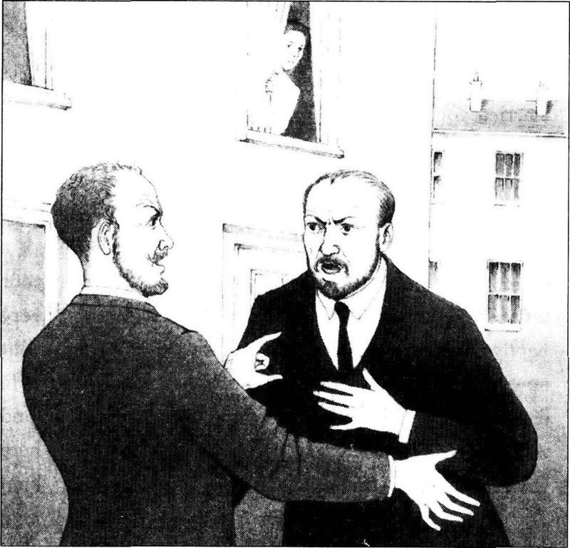
The Silent Brothers
5．Imagine that Powell Liversage didn't take Robert up to his spare room. Write out their conversation in the correct order and put in the speakers' names. Powell speaks first (number 5).
1) ______ 'He said that he couldn't stay in the same house as you. What's happened?'
2) ______ 'Why not?'
3) ______ 'Of course I can. She loves me and I love her.'
4) ______ 'Oh, no, you don't. You just want the twelve thousand pounds.'
5) ______ 'You can't stay here, Robert.'
6) ______ 'You! Powell, you can't marry Annie.'
7) ______ 'That's not true. Annie says you and John can have the money. She doesn't want it.'
9) ______ 'Well, I'm afraid she isn't going to marry you, and she isn't going to marry John. She's going to marry me.'
10) ______ 'Why is John in your spare room?'
11) ______ 'Annie said she was going to marry me, but John says she's going to marry him, so we quarrelled.'
6．Here are some new titles for the stories. Which titles go with which stories? Which titles do you prefer? Why?
1 News of the Engagement
2 The Burglary
3 Beginning the New Year
4 The Silent Brothers
Return from the Dead
A Clever Businesswoman
Two Husbands
Like Mother, Like Son
Unhappy Christmas
A New Father
An Unlucky Portrait
Twelve Thousand Pounds
The Missed Train
Mrs Bott's Will
A Dangerous Plan
Happy Christmas
7．What did you think about the people in these stories? Were they nice or nasty, clever or stupid? Did you feel sorry for anyboby? Choose some names, and complete some of these sentences.
Philip/Philip's mother/Mr Nixon
Sir Jee/William Smith/Lady Dain
Toby Hall/Priscilla
John Hessian/Robert Hessian/Annie Emery/
Powell Liversage/Maggie
1) I feel sorry for ______ because ______.
2) I think ______ was right/wrong to ______.
3) I think ______ did a very bad/nice thing.
4) I think ______ did a very clever/stupid thing.
5) I think ______ was stupider/nicer/nastier than ______.
封底
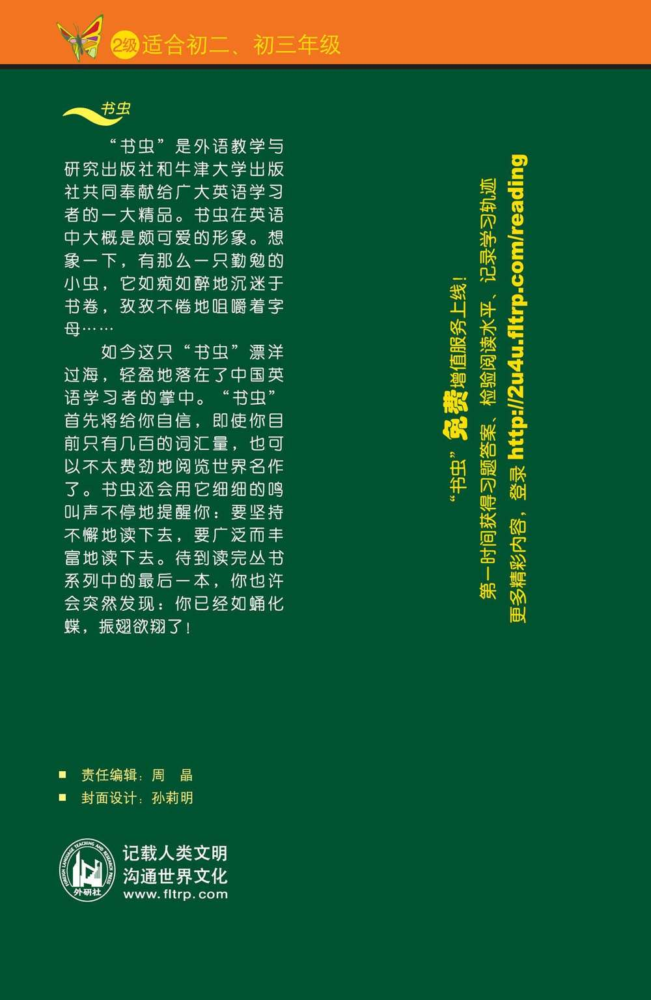